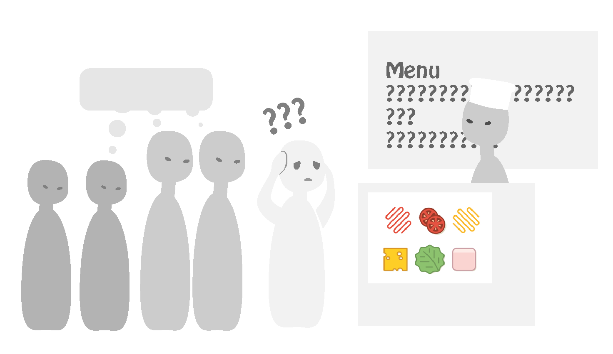
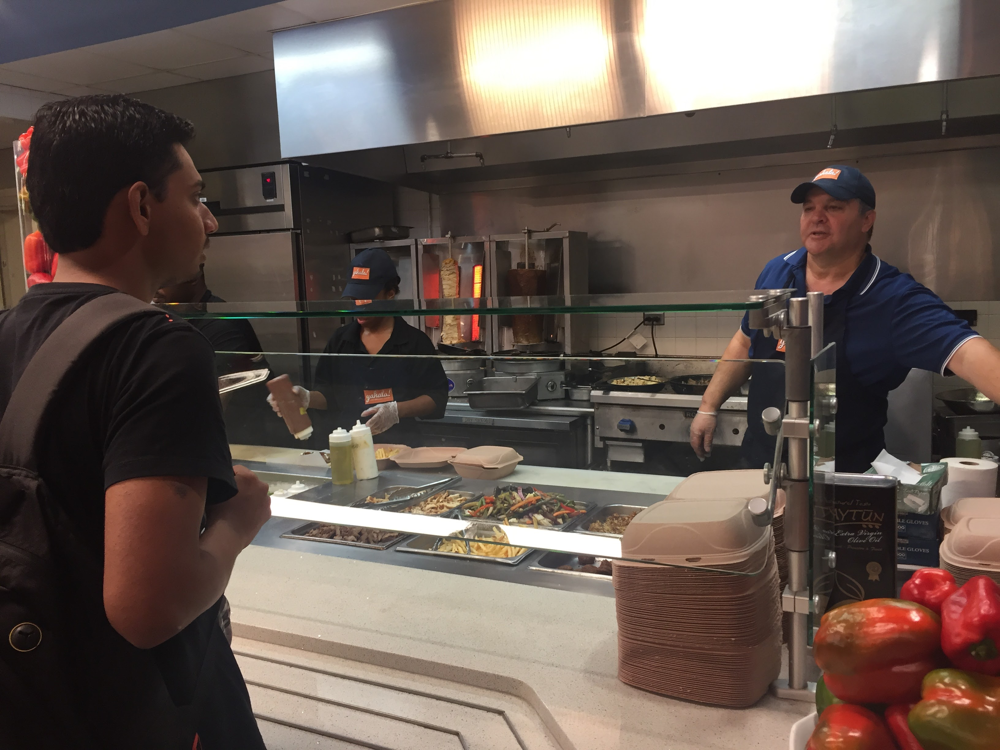
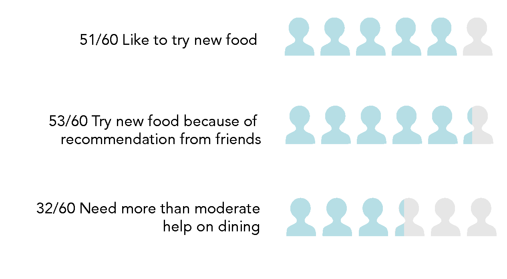

Human-Computer Interaction project
Position: Rotate leadership; Focus on research
Key words: User study, Product design
Motivation
In Georgia Tech, an approximately 5500 new international students arriving on campus each year. Good dining is an important part in overall adaptation to a new life abroad, but we have found the following experience widely shared among new international students (including ourselves):
“You are an international student attending Georgia Tech. While visiting the cafeteria you are confused by the many unfamiliar food choices and have difficulty understanding the menu. You cannot name the foods and do not know what foods you would enjoy. You are afraid to ask the server for information about the food because there is a long line and that would inconvenience those behind you.”

We are inspired to find a solution to help international students adapt to dining on campus in a better way.
User Research
Phase#1 Natural observation
Objective: Conduct a field study of the behavior of international students when they order food at on-campus restaurants. Understand the problem space without interfering with the natural interactions and processes of users. From the observation, we could find out some patterns in our user group which will help shape interview questions in the next phase.
Process: A roughly 30-minute natural observation in different campus restaurant for four sessions. Oral communication/ behaviors/ body languages/ facial expressions of students are observed and noted.
Phase#2 Task Analysis
The task flow varies according to the dining place:
- Cafeteria This dining place requires people to interact with one or more servers. People move along the line to order. There is typically a menu, but the food is displayed behind the counter and serve as a more obvious reference. This means that users could either communicate with words or by pointing to the food displayed.
- Fast food store This dining place usually has only one window to place order and check out. The only reference is the menu.
- Buffet This dining place has open windows with no servers in most cases. Users could pick food on his or her own, with no need to communicate with others. There is often no menu, but there are often name tags of food and some information.
These places have some common characteristics:
- Time is usually limited. This means that users have to take actions or make decisions under pressure. The social stigma of having other people waiting behind the user creates a negative incentive to avoid asking too many questions or taking time to consider the menu.
- The options are limited. This means that users only make decisions in not a lot many items.
- Relative information about food and process is provided but the display area is limited. This means that users cannot get very detailed information unless they reach out to people or internet.
- The environment is usually noisy. This means that the quality of verbal interactions is usually reduced.
- The space is usually crowded with people, who are most likely in a hurry as well. This means that users have little privacy in the process, and have to care about others’ opinions.
Phase#3 Contextual Interview

Objective: After natural observations, we need to understand further about our users’ feelings and problems, as well as the reasons underneath. We also need to identify how users’ personal traits relate to their problems. Contextual interview gives us opportunity to choose different settings in which our task would take place: cafeteria, fast food store or buffet. It also enables us to fully probe into a few typical characteristics of people like backgrounds, attitudes and behaviors, helping us to see more beyond the limit of our previous assumptions.
Process: Eight contextual interviews with first-year international students.
Phase#4 Affinity Mapping
An affinity map is created using the findings from CIs and observations. The standard procedure of creating affinity mappings was followed where we began with reading out aloud the note and sticking it on the wall. The subsequent notes were seen for matches and if not a new column was created. After this, we created blue labels highlighting the basis for column grouping. The pink labels were then introduced to group the various ideas grouped by the blue labels. Finally, the green labels were written to cover the pink labels giving us the final affinity diagram.

The findings can be categorized into three main groups (green labels):
- User values… A smooth check-out experience - The users were happy with the current paying and checking out process at the on-campus eateries Efficiency in dining - Many of the international students whom we interviewed were pressed for time. Usually, they prefer restaurants that are the nearest and do not like waiting. They are not able to cook as much at home due to lack of time. Prefers familiar foods - They usually add sauce/spice if they find the food bland. Preferring familiar sounding foods was observed in almost all the participants though some complained that even familiar sounding foods did not taste very familiar. Values peers’ opinions and choices - While waiting in line to order some of the students go with the most popular choice among the other people. Many depend heavily on the recommendations of their friends and would try new foods only when accompanied by them.
- Design Ideas… Peers’ choices are valued - The students usually eat what their friends recommend. Some of the students do not understand the dishes and some go with the crowd when at a new restaurant. Support trying out new foods - An overwhelming majority of the students were open to trying out new foods. Some of them would like more information about the food before they go ahead and try them. Menus and procedures should be more straight-forward and clear - It was noted that many of students wanted more time to study the menu and decide the food. Some of them had a difficulty in communicating with the servers while some were embarrassed to ask the server for more information.
- Other findings... A few of the interviewees did mention that they look for healthy food when making food choices. A few of the interviewees were of the extrovert personality type and did not have any hesitation in asking the server for more information regarding the food items on the menu.
Phase#5 Surveys
Objective: After contextual interview, we did affinity mapping and discovered several important patterns from our data. We have narrowed down our focus in user research, thus it is time to confirm our findings in a larger group of our target users. We also need to collect more data to help us form persona, which will then guide the process of idea generation.
Process: We designed a survey asking international students about their experience on different aspects about on-campus dining, their difficulties, and habits regarding dining choices. We distributed the survey through social media groups of international students. There are 60 valid responses.

Some key findings
 Summary of User research
Summary of User research
Phase#6 Personas
For our personas we analyzed our design needs and recommendations and compared those with the feedback we received from our interviews and surveys. We matched our personas to the broad trends we perceived in our data. We were able to identify three different major personas from these trends.
The major personality factors included length of stay in America, introversion/ extroversion, and eating habits. The minor factors included wanting healthy foods and country of origin.
Primary Persona
Yan is a little introverted and less likely to ask questions in the process of ordering. She is much more aware of the social consequences of trying to order and doesn’t wish to take a lot of time in that process. Her response to the anxieties from trying to order results in her being more likely to skip a restaurant that she can’t understand the foods and menu for. Her personal solution to this problem is to rely on friends who have already gone through this process to either order for her or provide recommendations. However, she would like to try new foods, just that the difficulty in understanding what they are means that she would rather not without sufficient information.
We made Yan as our primary persona because she has the most difficulty in adapting to dining on campus. She represents a large group of people that we should be a major focus of our design choices.
Secondary Persona 1
The second persona is Ram, who has been in the United States for 1 and a half years. Ram is meant to represent certain trends that we noticed in our data. What we found in our research was that despite being in the US for a year or two, international students were still unfamiliar with American foods and uncertain about the process of ordering. This means that Ram shares many of the same problems as the first persona. The major difference is that Ram is more outgoing and less concerned with asking questions and taking his time ordering. The unfortunate consequence that we found was when ordering the talking back-and-forth to the server only reveals more issues and causes more confusing in the ordering process. Ram places a higher priority on knowing what foods actually are, and if he would find them tasty. While Ram is willing to try foods, he may not like them and is often disappointed when he orders something that isn’t like what he wanted.
Secondary Persona 2
Pablo, is a graduate student that has lived in the United States for over 3 years. He could be considered more of an “expert user” among international students. Pablo has been in the US long enough that he is familiar with common American foods and the cultural process of ordering. He still has several difficulties, but Pablo has different priorities than the other personas. Pablo is more of a connoisseur and wants to try new and tasty foods. His issue is that many times when he tries something new, the food is not good. Many of these experiences means that Pablo is not eating the variety of foods that he would like. Pablo is more influenced by price information, and coupons and sales may be more effective incentives. He already knows what many common foods are, and is much more interested in trying new tasty foods.
Design Process
Phase#1 Idea Divergence
Based on the research findings presented above, our team is able to come up with a list of ideas that have the potential to solve the ultimate problem. We hold a brainstorming session, diverging with 40+ ideas, and organize them through Big Idea Vignettes. After converging the number of ideas to about 14, we further vote on the ideas according to two dimensions: feasibility and impact.

Phase#2 Idea Convergence

The top three big ideas are then realized in low-fi prototypes. Here is one of the idea, the AR Menu.
The key idea here is to make use of google glass to provide real time information of food. In this case, users won’t be embarrassed from asking questions to the server or not understanding the server.
Storyline:
- This is the first time for Yan to dine at Tech Square. She has never ordered at a restaurant at Moe’s before, and she has little knowledge on Mexican food overall. Fortunately, she has downloaded the Food Detector App on her Google Glass.
- On walking in the restaurant, the glass detects the location and surroundings and prompts her to start the app. Feeling the need to learn more about this new restaurant, she chooses the “I am feeling curious” mode.
- She looks up at the menu on the wall from a distance, acting as if she is just studying what to order like an acquaintance. However in her glass, she could already see the detailed information of every item of the menu.
- On seeing “Homewrecker”, she is confused about what the name means, but the glass tells her the origin of the name, as well as the real flavor of this kind of dish. She also finds out that 4 of her friends has LIKED this food on social media. These knowledge makes Homewrecker look more compelling to her.
- She has no idea about the procedure yet. But she doesn’t need to worry, because she could order along with the prompts on her glass. There are detailed steps listed in the second page for the food. She now feels confident enough to walk straight to the window for a fabulous adventure of trying new food.
Phase#3 Final Product Idea
We collected feedbacks on the three ideas from classmates and teaching staff, and integrated features into one design. The final idea is an app that gamify the process of trying out (and sharing) new food within a social network of friends. It also provides clear information about the menu, food and instructions for the order procedure.
The interaction flow is illustrated below in low-fi prototype:
Phase#4 Heuristic evaluation
We conducted a heuristic evaluation with two UX experts on the low-fi prototype. The key feedbacks include that the hierachy with the hamburger menu is not straightforward; there should be positive reactions to friends' recommendations besides the negative reaction. There are also some problems with the logic between pages. Based on these we made changes to the prototype and get ready to make hi-fi prototype on Sketch. We decided on using sea green as our primrary color to make the app looks friendly and health-related. This hue of green also goes well with real food pictures that we will use a lot later in the app.Phase#5 Hi-fi prototype (inVision)
Evaluation
| Method | Objective | Measurement | Participants |
|---|---|---|---|
| Heuristic evaluation | Informal evaluation on low-fi paper prototype, help iterate design in an early stage. | Nielsen & Molich 10 Heuristics | Two UX experts |
| Usability testing | Formal evaluation on high-fi interactive protoype, test usability | Task performance metrics; System Usability Scale; User Engagement Scale | 4 users (international students in GT) |
Action Plan
The two phases of evaluation mentioned above provided much insights into how to improve the current design. We prioritized the issues according to its serverity and impact, and generated this action list for future iterations.
Priority |
Issues |
Solution |
|---|---|---|
High |
Procedure is difficult to read |
Include more pictures of each item; Provide translation in users’ native language. |
Lack details |
Provide more details: distance, Average price per person, sorting based on the distance/ how many friends has visited the restaurant. |
|
Medium |
Avatar is confusing/ unnecessary |
Abandon the avatar and use a regular user profile instead. Also allows users to modify their food restriction and preference there. |
Roulette icon sometimes covers important information (e.g.Ingredients) |
Put the icon in the middle of the tab bar. Since it is a top favorite function it should be put in the most obvious position. In this way it won't cover any important details. |
|
Lack instructions on guiding user to go to the restaurant to get the food and write the review. |
Provide prompts--"Have you tried it?" after users tap the complete button on procedure page. |
|
Low |
Homepage (avatar page) is confusing |
Use friends' interaction page as homepage because according to the feedback it's the most important page. |
Lack expected animation |
Display spinning animation when user “spin” the roulette. |

{kind=link}
{kind=link}
{kind=link}
{kind=link}
{kind=link}
{kind=link}
{kind=link}
{kind=link}